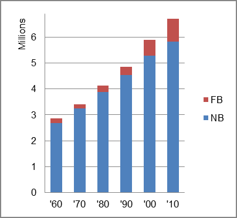

The foreign-born (FB) population increased from 178,658 in 1960 to 886,262 in 2010. That was an increase of 396.1 percent. The foreign-born share increased from 6.3 percent in 1960 to 13.2 percent in 2010.
The share of the overall population that was native-born (NB) increased by 118.3 percent.
Washington: Population 1960-2010 
The first chart below shows the three population change factors for three periods adjusted for annual average amounts. The largest factor contributing to population increase in the first period was NDM, and in the two most periods it was B-D.
The second chart shows the same data but with an adjustment to reflect births to immigrants shifted to NIM. In it, NIM replaced B-D as the largest contributor to population increase in the two most recent periods.
Washington: Sources of Population Change 1990-2013 Washington: Sources of Population Change (Adjusted) 1990-2013
B-D NDM NIM B-D NDM NIM 90-'99 47.2% 50.6% 2.2% 90-'99 36.8% 50.6% 12.6% 00-'09 44.2% 30.2% 25.6% 00-'09 26.4% 30.2% 43.4% 10-'13 48.7% 23.6% 27.8% 10-'13 27.3% 23.6% 49.1%